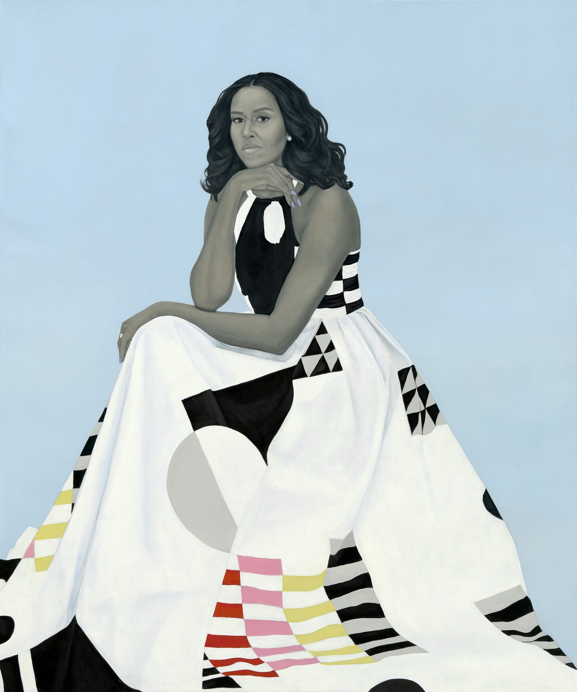

Michelle ObamaMichelle LaVaughn Robinson Obama (née Robinson; born January 17, 1964) is an American lawyer, university administrator and writer, who was the first lady of the United States from 2009 to 2017. She is married to the 44th president of the United States, Barack Obama, and was the first African-American first lady. As first lady, Obama served as a role model for women, and worked as an advocate for poverty awareness, education, nutrition, physical activity and healthy eating. She supported American designers and was considered a fashion icon.
|